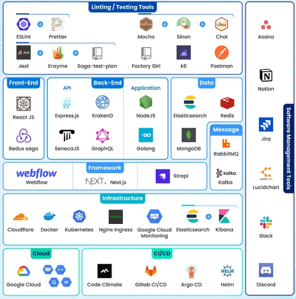

In the rapidly evolving world of technology, having the right tech stack and tools is essential for success. This blog post provides a breakdown of the essential tools and technologies that can enhance your productivity and effectiveness.
Popular languages like Python, JavaScript, and Java are foundational in various applications.
Frameworks such as React for front-end development and Django for back-end development streamline the development process.
Understanding databases like PostgreSQL, MongoDB, and MySQL is crucial for data management and retrieval.
Git is essential for version control and collaboration in software development projects.
Tools like Visual Studio Code and Docker enhance the development workflow and deployment processes.
Recent innovations in AI tools are simplifying complex tasks, making it easier for developers to integrate AI capabilities into their applications.
No-code platforms are gaining popularity, allowing users to build applications without extensive programming knowledge, democratizing app development.
Understanding your tech stack and the tools available is vital for any tech professional. By equipping yourself with the right tools, you can significantly enhance your productivity and impact in the tech industry.